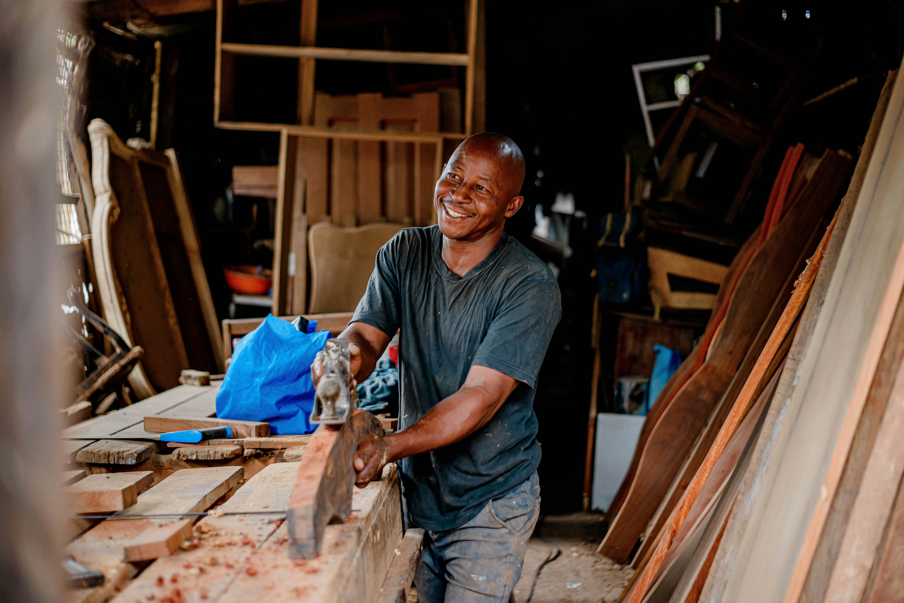

Our Story: Bridging
Heritage and Modern
Reliability
We believe in the enduring value of skilled craftmanship.
FixItLocal was founded on a simple premise: to connect
discerning homeowners with exceptional local artisans,
elevating everyday maintenance into an art form.
